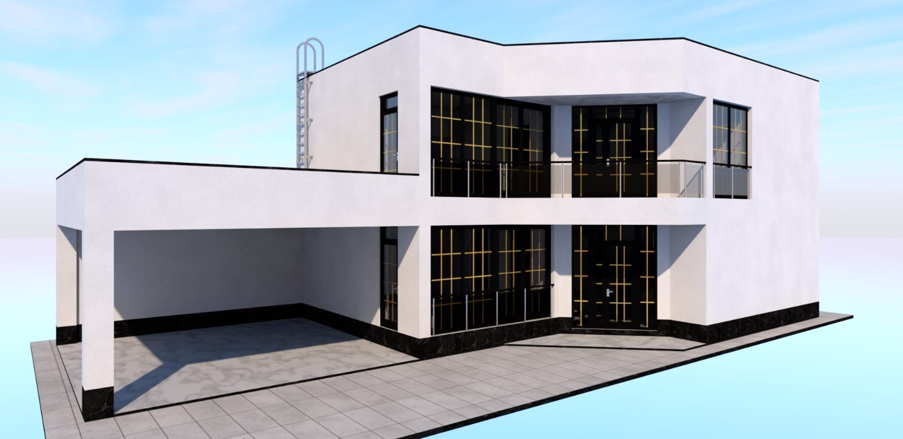
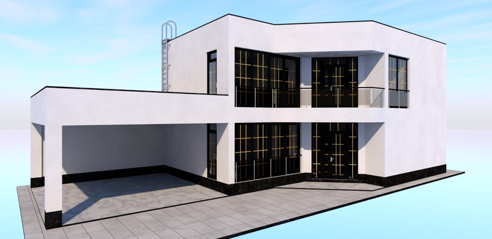
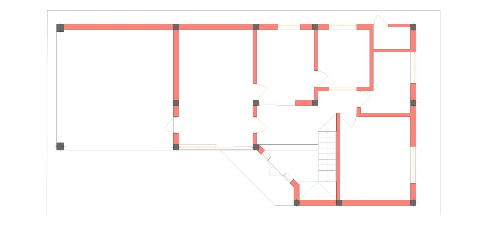
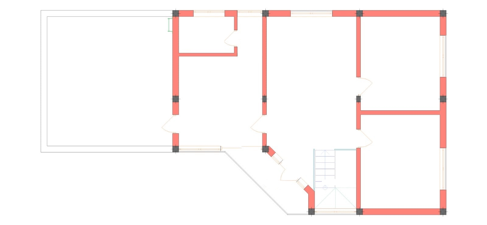
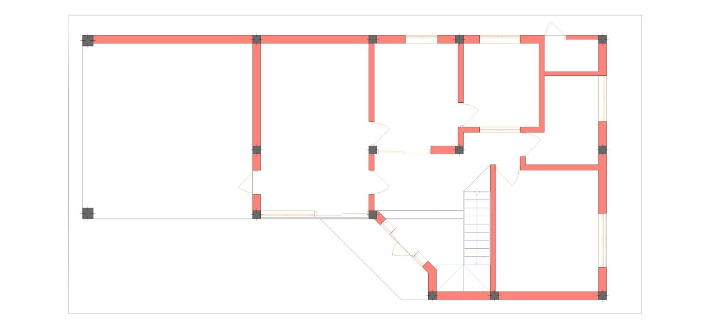
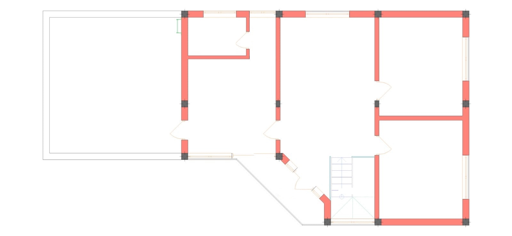

 



Современная вилла с «черновой» кухней и огромной террасой на крыше
Этот двухэтажный дом — яркий пример современной функциональной архитектуры. Белоснежный фасад, плоская крыша и строгие линии создают образ стильного и лаконичного жилья. Проект отличается нестандартной геометрией входной группы и наличием больших открытых пространств для отдыха на свежем воздухе.
Первый этаж — Идеальный сервис и комфорт: Планировка первого этажа разработана с особым вниманием к хозяйственным потребностям большой семьи:
- Кухонный блок: Это мечта любой хозяйки. Помимо основной красивой кухни-столовой, здесь предусмотрена скрытая «черновая» кухня для готовки, большая продуктовая кладовая и топочная (котельная). Все эти помещения сгруппированы в единый функциональный узел.
- Жилая комната: На этаже расположена изолированная спальня, которая подойдет для старшего поколения или гостей.
- Парковка: С левой стороны дома интегрирован капитальный навес для автомобиля, надежно защищающий транспорт от осадков и солнца.
- Входная группа: Просторный холл с гардеробной зоной под лестницей встречает гостей уютом и светом.
Второй этаж — Приватность и лаунж-зона: Второй уровень предлагает роскошные возможности для отдыха:
- Грандиозная терраса: Крыша навеса используется как огромная открытая терраса. Здесь можно обустроить летний сад, зону для загара или площадку для вечеринок.
- Мастер-сьют: Одна из комнат (кабинет или спальня) спроектирована по гостиничному типу — с собственной гардеробной и ванной комнатой, обеспечивая хозяевам полную приватность.
- Семейное пространство: Также на этаже находятся две дополнительные спальни и общий просторный зал (холл), где семья может проводить вечера вместе.
- Балкон: Небольшой угловой балкон добавляет архитектуре изящества.
Ключевые преимущества:
- Продуманная логистика: Разделение на "чистую" и "черновую" кухни.
- Максимум воздуха: Огромная эксплуатируемая терраса расширяет полезную площадь дома.
- Гибкость: Наличие кабинета/спальни с удобствами позволяет адаптировать дом под разные сценарии жизни.